События
СобытияВсе события: когда, где и как играть
В игре постоянно идут события. За каждое дают награды — и тебе, и альянсу. Здесь каждое событие разобрано отдельно: что это, когда проходит, куда нажать и как не слить войска.
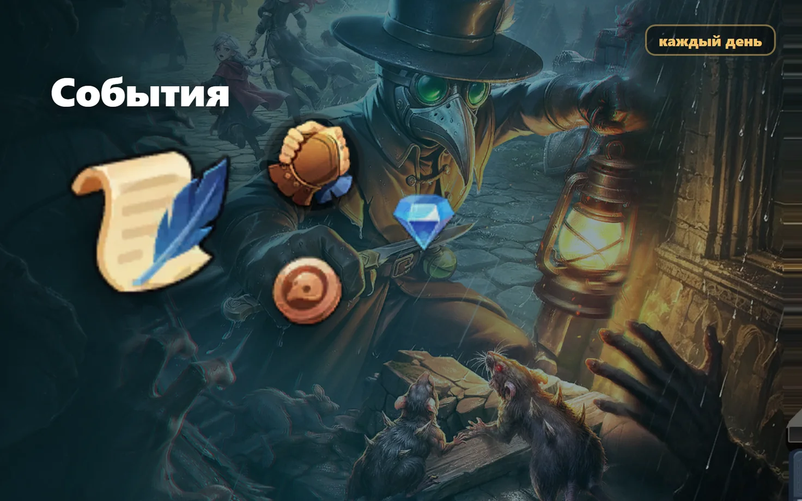
Особые события
Кнопка справа вверху. Внутри: Битва на выживание, Гонка за эликсиром, Викторина, Король демонов, Поиск вора, Сырная ловушка.

Каждый день
Король демонов (кроме воскресенья) и Битва на выживание. Делай их всегда.
Сырная ловушка
Раз в 2 дня. Время назначают R4 или R5 альянса.

Штурм
Во многих событиях монстра бьют штурмом: один начинает, остальные нажимают «Вступить».
Какое событие когда бывает
Сначала расписание, потом подробности по каждому. Время сервера: оно меньше московского на 5 часов. Новый игровой день начинается в 00:00 на сервере, это 05:00 по Москве.
Колдун — пн и чт · Рейнджер — вт и пт · Воин — ср и сб
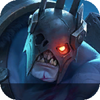
это 05:00, 11:00, 17:00 и 23:00 МСК

открывается со 2-го дня сервера, нужно Святилище 7


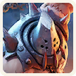


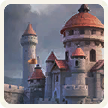
это 14:00, 23:00 или 04:00 МСК; участвуют 32 сильнейших альянса сервера, Святилище 15+

нужно: состоять в альянсе, в альянсе записались хотя бы 15 человек со Святилищем 15+

первый раз — примерно на 20-й день сервера; в другую неделю на эти дни идёт «Опыт пандемии»; львиные монеты не сгорают до следующего раза

как часто повторяется — пока неизвестно
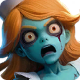
сложность, выбранная в начале, не меняется до конца события; прошёл её всю — в следующий раз откроется следующая

как часто повторяется — пока неизвестно

каждый день приходит 1 бесплатная монета; колёс два: с героями и с ресурсами ворона
в нём же — Осквернённая графиня
после начала Эры Возрождения его место занимает «Внутренний демон Клэр»

со Святилища 6; 15 вопросов, алмазы дают даже за неверный ответ

кирки за задания, задания обновляются в 00:00 по серверу (05:00 МСК); как часто повторяется — пока неизвестно

1 приключение в день бесплатно
Как узнать заранее, когда придёт событие: в городе есть лента у Монумента — она показывает, в какой день придёт событие. Дни считаются от открытия сервера, поэтому у разных серверов день недели может отличаться. Где написано «пока неизвестно» — если знаешь, как часто приходит событие, скажи, допишем.
Все события на одной странице
Гонка за эликсиром
каждую неделю, бой в пятницу, 30 минутАльянс против альянса, 20 на 20. Захват зданий на отдельной карте.
Поиск вора
раз в 2 недели, 3 дня (ср–пт)Вместо скверны ловишь золотых воров и бьёшь их главаря штурмом.
Сырная ловушка
раз в 2 дня, 30 минутАльянс ловит Крысу в ловушку и бьёт её штурмами.
Король демонов
каждый день, кроме ВсМировой босс: 10 ударов в день. Даёт серверу очки КвК.
Битва на выживание
каждый деньРаунды по 4 часа со своей темой. Соревнуешься с игроками своего уровня.
Викторина
каждое воскресеньеВопросы про игру. Ниже — готовые ответы.
Долина Кристальных Гроздей
воскресенье, 4 разаСобирай кристаллы: бей крыс и копай шахты. В конце — «царь горы».
Охотничий бой
по команде R4/R55 волн скверны с боссом после каждой волны.
Блуждающий фантом
1 деньБить огромную Блуждающую скверну, которая гуляет по карте.
Опыт пандемии
3 дняУбить 30 сиделок от 1 до 30 уровня и Докторов-крыс альянсом.
Осада нежити
по команде R4/R5Волны монстров атакуют твой город. Щиты не работают.
Завоевание каньона
каждую неделю, с 3-й недели сервераЗаписался — и бои идут сами. 3 линии, нужно выиграть 2.

Экспедиции
сброс вт, чт, всБитва экспедиции по фракциям, Экспедиция альянса, Приключение.
Улучшение снаряжения
суббота и воскресеньеУлучшай снаряжение героев — получай награду.
Торговец-отшельник
7 днейМагазин за монеты события. Первый товар всегда бесплатный.

Осквернённая графиня
во время «Дня охоты Селии»Монстр события Селии, 12 уровней. Бьют только штурмом альянса.
Колесо желаний
каждый деньРулетка за «Монеты желаний». Рядом бывает «Благословенное колесо».

День охоты Селии
2 дняБей скверну 1–20 уровня штурмами, получай «Сундук Селии».
Теневая скверна
пн и чт, 4 заходаОтдельное событие, не обычный босс: по 3 часа, 5 атак вместо 10.
Шахта гномов
кирки раз в деньКопаешь этажи. Перед раскопкой выбери награду этажа.

Неожиданная встреча
1 раз в день бесплатноПриключение за алмазы. Больше 4 сундуков копить нельзя.
Война королевств (КвК)
суббота 17:00 МСКНаш сервер против чужого. Отдельный раздел.

Праздничные события
на праздникиХэллоуин, праздник луны, пираты, Пасха, банкет, Рождество и Новый год.
Дуэль альянсов
пн — сбАльянс против альянса, 6 тем. Отдельный раздел.
Гонка за эликсиром
Два альянса по 20 человек попадают на отдельную карту. Захватываешь здания — капают очки. Через 30 минут побеждает тот, у кого больше очков. Солдаты здесь не погибают: после боя все войска возвращаются как были. Победа во время КвК даёт нашему серверу 50 000 очков.
Где найти — по шагам
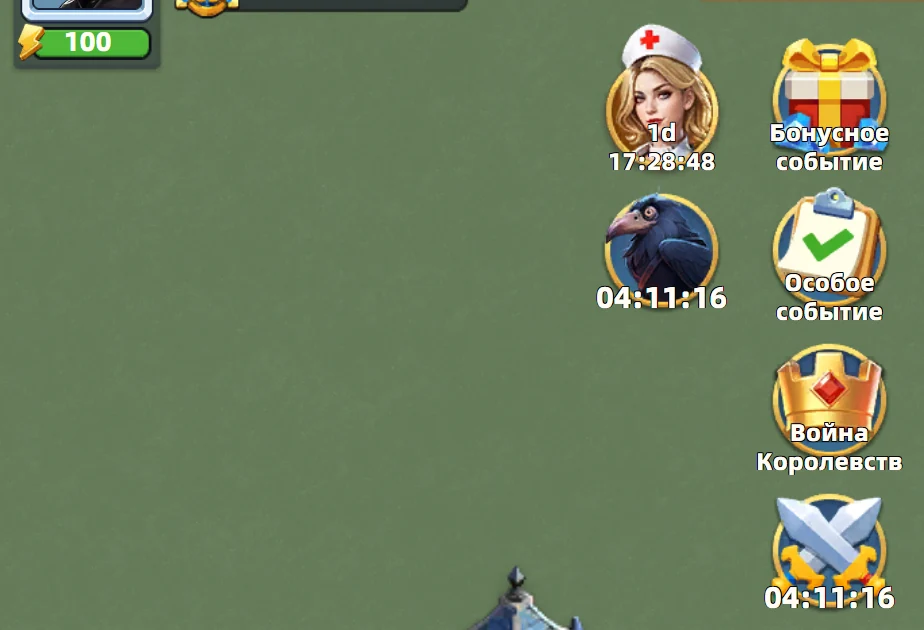
Значок «Особое событие»
Справа на главном экране, в столбике круглых значков — второй сверху (с галочкой на планшете). Откроется окно «Событие» с вкладками сверху.
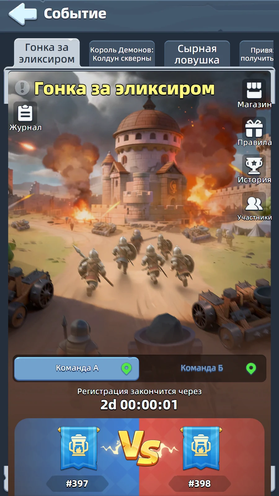
Вкладка «Гонка за эликсиром»
Первая вкладка. Так окно выглядит во время записи: «Команда А» / «Команда Б», отсчёт до конца регистрации, день и время боя (переключатель «Время сервера»), «Зарегистрирован» — альянс записан, и сколько участников выбрано из 20. Внизу кнопки лидеров (R4/R5): «Выбор времени» и «Выбор участников». Справа «Магазин», «Правила», «История», «Участники», слева «Журнал».
После подбора соперника (в четверг) вместо этого появляется наш альянс против соперника.
Когда до боя остаётся 5 минут, внизу появляется кнопка «В бой!» — она переносит на карту события. Записывают лидеры кнопками «Регистрация», «Выбор времени», «Выбор участников».
Как попасть
Лидеры альянса выбирают 20 основных участников и 10 запасных. Основные заходят первыми. После записи список закрывается. Обычно заявки собирают до четверга.
Пригодятся, если лечебных палаток не хватит.
Справа вверху «Особые события» → «Гонка за эликсиром». Тебя перенесёт на карту в свою зону: наши — синие, враги — красные. В своей зоне тебя не трогают.
Соперника игра подбирает по общей мощи записанных участников (берётся самая большая мощь, какая у них когда-либо была).
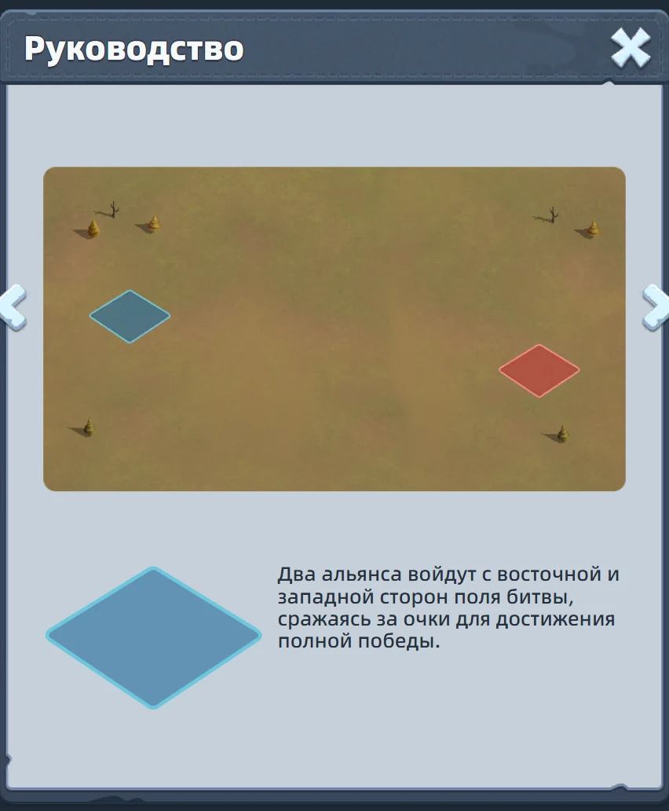
Окно игры «Руководство»: наши входят с запада (синие), враги — с востока (красные).
Что происходит по минутам
Заходим в свои зоны. Нас никто не может атаковать.
Открыты Алхимические мастерские, Врата миграции, Наблюдательный пункт, Лечебные палатки.
В центре открываются Замок эликсира, Реликвии войны, Проклятый алтарь.
Появляются Лагеря с травами — сбор тоже даёт очки.
Что дают здания
Это окно самой игры: в окне события справа кнопка «Правила» → вкладка «Здание». «Альянс» — сколько очков в секунду здание даёт альянсу, «Личное» — тебе, пока твой отряд в нём.

Замок эликсира
В центре, открывается на 10-й минуте. Даёт больше всего очков. К 10-й минуте все сильные должны быть у центра.

Алхимическая мастерская
Две штуки, у входов каждого альянса. Дают много очков постоянно — берём первыми.

Лечебная палатка
4 штуки. Немного очков, но главное — лечит 15 твоих раненых каждые 10 секунд. Вылеченных забирай слева внизу, нажимая зелёную кнопку.
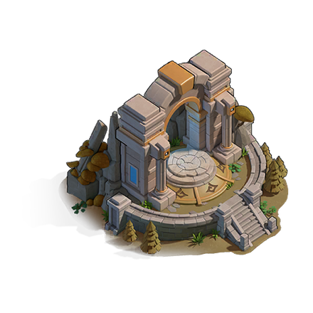
Врата миграции
Открываются в начале битвы. Пока они наши, перезарядка переезда по карте вдвое короче.

Наблюдательный пункт
Открывается в начале битвы. Захват даёт +10% к очкам альянса от всех занятых нами зданий.
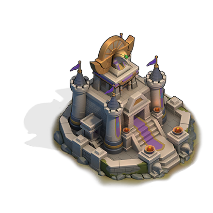
Реликвии войны
Открываются на 10-й минуте. Пока они наши, у наших героев +15% атаки, защиты и здоровья.

Проклятый алтарь
Открывается на 10-й минуте. Пока он наш, у вражеских героев −15% атаки, защиты и здоровья. Если враг сильнее — алтарь наш главный шанс.

Лагеря и аптечки
С 13-й минуты отправляй самые слабые отряды в лагеря за травами — это очки. Вокруг захваченных зданий появляются аптечки — подбирать их тоже дают очки.
Карта события — по шагам
Это окно самой игры «Руководство» (в окне события — кнопка «Правила», значок «!»). Листаешь стрелками — на карте подсвечиваются здания по очереди.
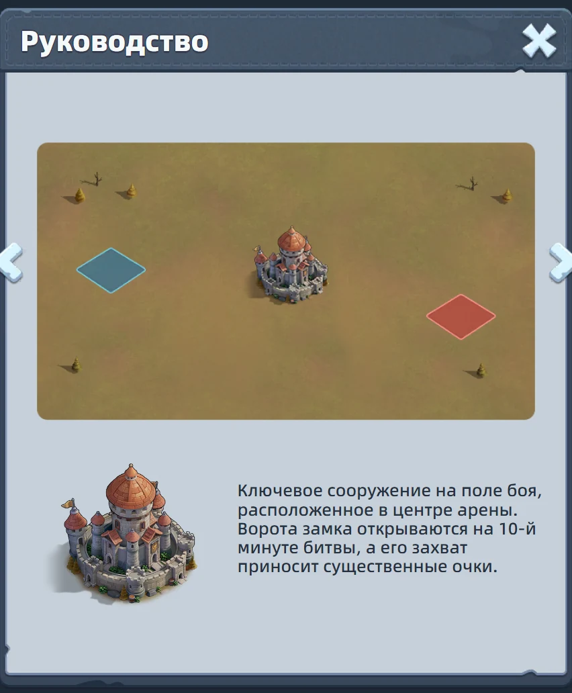

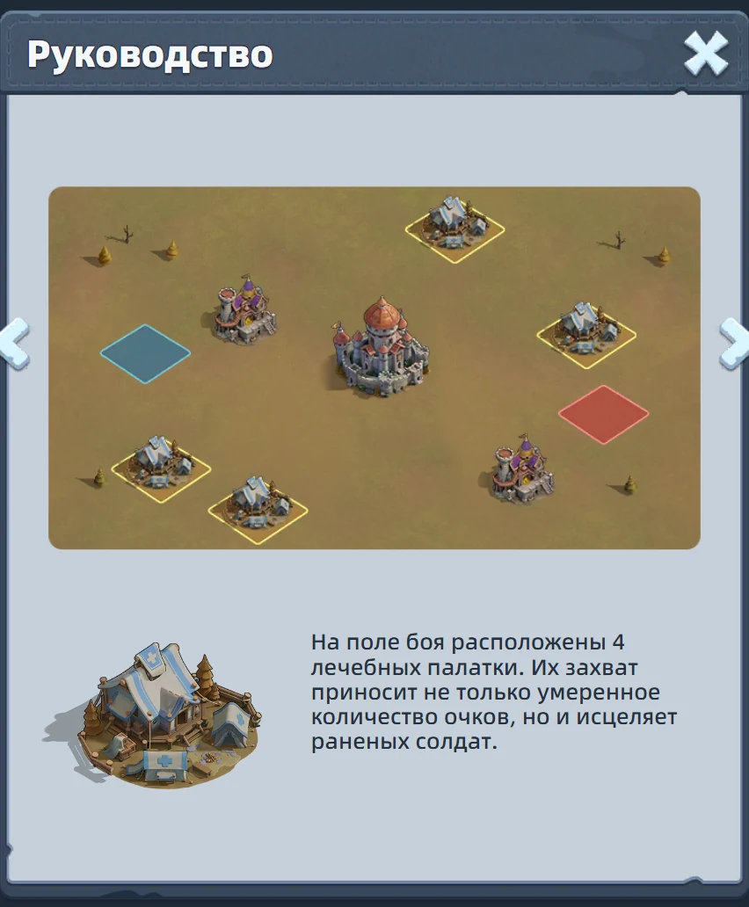
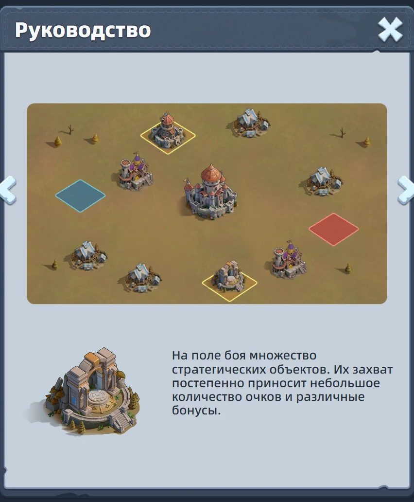

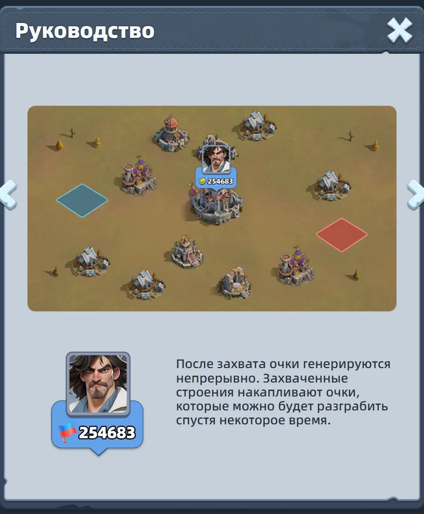
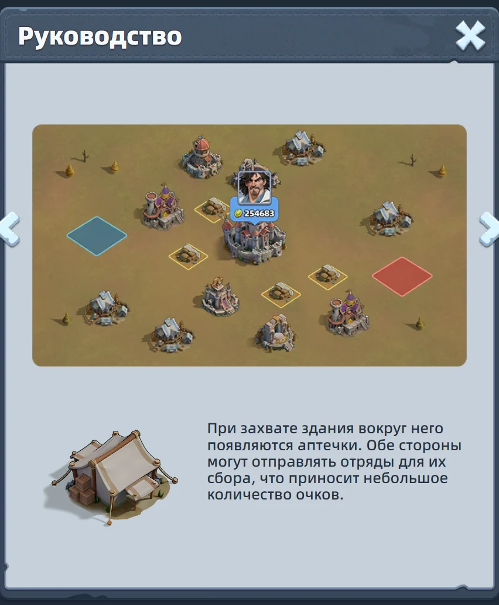
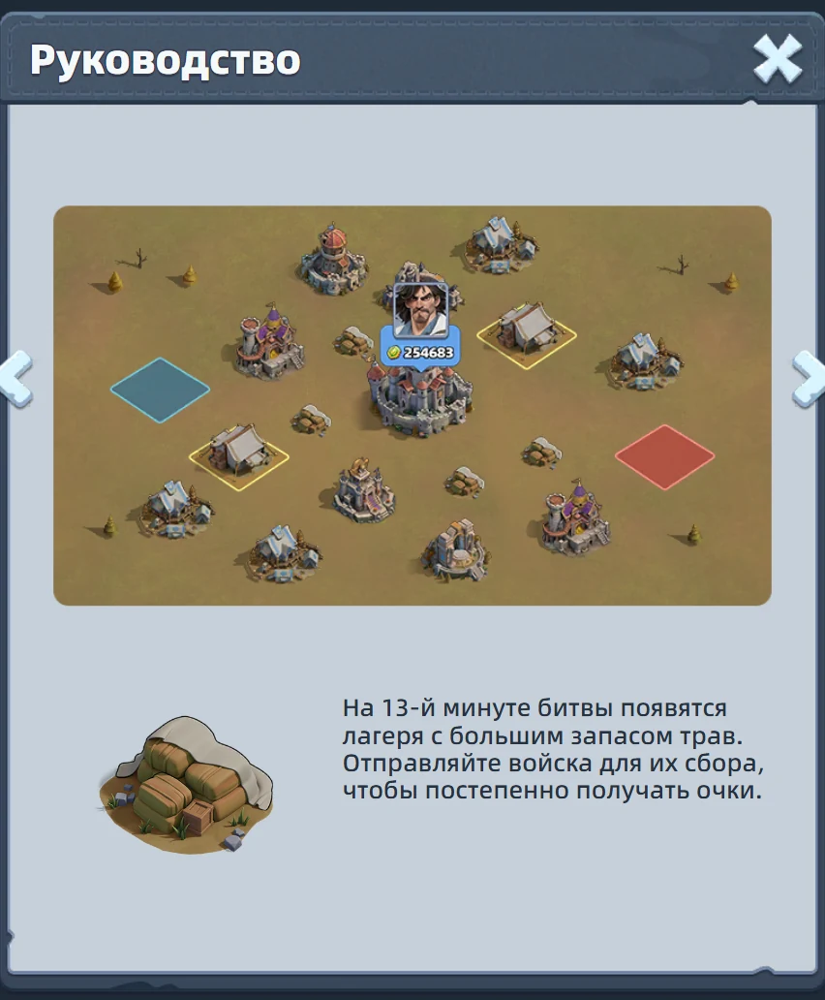
Тактика — как выиграть
Серое здание — ничьё: просто отправь отряд. Красное — вражеское: сначала выбей их штурмом. Одиночная атака на занятое здание сливает войска.
Чем больше наших отрядов внутри, тем сложнее врагу его отбить.
Команда 1: Алхимическая мастерская, Врата миграции, с 10-й минуты — Замок эликсира. Команда 2: Лечебные палатки (держать хотя бы 2 из 4) и Проклятый алтарь. Если нас 15 и больше — третья команда жжёт города врага.
Не ставь лечение на всё сразу: лечи столько, сколько закроют твои ускорения, иначе они зависнут.

Главная хитрость — жечь города врага.
У каждого города в событии прочность 5 000. Каждая удачная атака снимает 1 000. После 5 атак город врага улетает на его базу — вместе со всеми его отрядами. Если он держал здание, его отряды оттуда исчезают, и здание можно занять без боя.
Почти никто не держит войска на стене, поэтому даже слабый игрок может «сжечь» сильного. Переезд по карте — раз в 3 минуты, и сожжённый игрок ждёт, пока мы набираем очки.
Поиск вора
Три дня (со среды по пятницу, раз в две недели) на карте появляются золотые воры. Ты ловишь их — получаешь львиные монеты и тратишь в магазине события. Здесь же хорошие награды для Ворона: эссенция и снаряжение.
Где найти — по шагам
Значок «Особое событие»
Справа на главном экране, в столбике круглых значков — второй сверху (с галочкой на планшете). Откроется окно «Событие» с вкладками сверху.
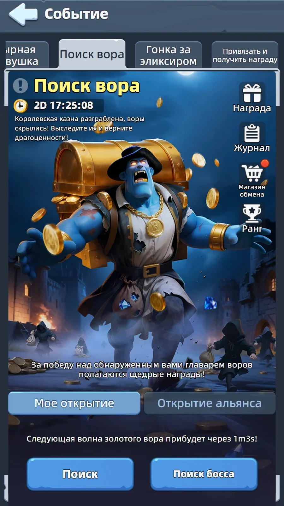
Вкладка «Поиск вора»
Сверху — сколько осталось до конца события. Посередине переключатель «Мое открытие» / «Открытие альянса». Внизу кнопки «Поиск» (ближайший золотой вор) и «Поиск босса» (главарь воров). Справа — «Награда», «Журнал», «Магазин обмена» и «Ранг».
Кто есть кто в событии

Золотой вор
Приходит на карту волнами: внизу окна события таймер «Следующая волна золотого вора прибудет через…». В окне наград игра пишет диапазон уровней волн — 5–75. Кнопка «Поиск» находит ближайшего — 5 уровня, его побеждает один отряд. За каждого — львиные монеты.
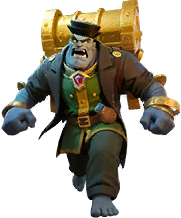
Главарь воров
Появляется, когда бьёшь золотых воров: в чат альянса приходит «…одолел золотых воров. Появился главарь воров ур. N». Найти — кнопка «Поиск босса». Он намного сильнее — бейте штурмом. Сначала у него время защиты для зачистки своим альянсом. Нашедший и командир победившего штурма получают отдельные награды.
Что делать
Кнопка внизу слева в окне события (в рамке на картинке выше). Игра покажет ближайшего золотого вора 5 уровня.
Новая волна золотых воров приходит по таймеру внизу окна — в это время воров на карте больше всего.
«Поиск босса» ведёт к главарю. Собирайте штурм альянсом, пока его не перехватили.
Награды за рейтинг урона приходят на почту после конца события.
Сырная ловушка
Альянс ставит ловушку с сыром, в неё попадается Сырный вор (крыса), и все бьют её штурмами. Бой длится 30 минут. Чем больше урона — тем лучше награды каждому и всему альянсу. Хороший источник противоядия и материалов Ворона.
Где найти — по шагам
Значок «Особое событие»
Справа на главном экране, в столбике круглых значков — второй сверху (с галочкой на планшете). Откроется окно «Событие» с вкладками сверху.
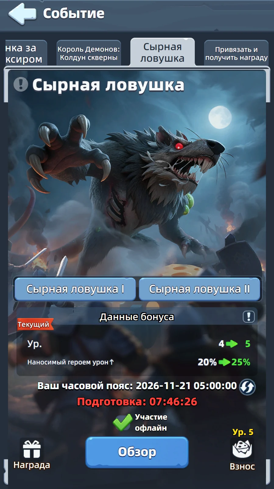
Вкладка «Сырная ловушка»
Переключатель «Сырная ловушка I» / «Сырная ловушка II», ниже «Данные бонуса» — уровень усиления от взносов и прибавка к урону. Внизу: «Награда», большая кнопка «Обзор» (переносит к ловушке на карте) и «Взнос» — справа внизу, туда кладут Мышиную приманку.
Как это устроено
R4 или R5 выбирают ловушку I или II, уровень и время начала. Выбрали одну — вторая блокируется. Нужно минимум 20 участников. Если не назначить до 22:00 по игре (03:00 МСК) в последний день — ловушка пропадёт.
Кнопка «Взнос» справа внизу окна события (в рамке на картинке выше). За это ты получаешь монеты альянса, а ловушка — больше урона. До лимита усиление растёт, после — дают только монеты.
Крыса попадается, и у альянса 30 минут. Бить её можно только штурмами.
Нажми на ловушку → «Ранг»: там видно, сколько личного урона нужно на награды и сколько ты уже нанёс. Добрал нужную планку — остановись. Если бить все 30 минут, просто потеряешь войска: Крыса с каждой фазой бьёт сильнее, а награды сверх планки не растут.
Чей штурм бьёт сильнее. Игра даёт бонус к урону штурмам, которые начал руководитель альянса: штурм R5 или R4 с титулом — +5% урона, штурм R4 без титула — +2,5%. Поэтому вступай в штурмы лидеров, а не создавай свои.
Кнопка «Участие офлайн». В окне ловушки можно включить «Участие офлайн». Тогда, пока тебя нет в игре, твой самый сильный отряд сам вступит в штурм за 20 секунд до конца сбора, если в нём есть место. Игра честно предупреждает: это может привести к потерям войск. Включай, только если уходишь и лазарет пустой.
Личный урон
Нажми на ловушку → «Ранг»: видно, сколько урона нужно и сколько ты нанёс. Добрал планку — остановись. Тот, кто нанёс больше всех урона в альянсе, получает в 1–10 раз больше наград альянса.
Сложность
Каждый новый уровень Крысы примерно в 4 раза сложнее. Повышайте уровень с умом: войск теряется больше.
Лечение
После каждой атаки лечи войска, чтобы лазарет не переполнился. С помощью альянса это быстро.
Король демонов (мировой босс)
Где найти — по шагам
Значок «Особое событие»
Справа на главном экране, в столбике круглых значков — второй сверху (с галочкой на планшете). Откроется окно «Событие» с вкладками сверху.
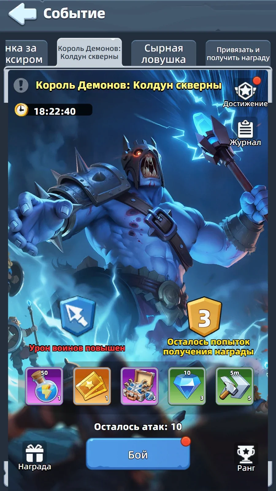
Вкладка «Король Демонов: Колдун скверны»
Вкладка называется по сегодняшнему боссу: «Колдун скверны», «Рейнджер скверны» или «Воин скверны». В окне — сколько до конца дня, какой фракции обещан бонус, «Осталось атак» и кнопка «Бой»: она переносит к боссу на карте.
Босс на карте мира. Нужно Святилище 8 уровня и выше. 10 атак в день, штурмы нельзя — бьёшь только сам. Рейтинг дня считается по твоему самому сильному одному удару. За число атак тоже дают награды.
Король демонов не бьёт в ответ, поэтому танки против него не нужны — только урон.
| День | Король демонов | Бей героями |
|---|---|---|
| Пн, Чт |  Колдун скверны Колдун скверны | Воинами |
| Вт, Пт | Рейнджер скверны | Колдунами |
| Ср, Сб | Воин скверны | Рейнджерами |
Какая фракция бьёт сильнее — написано в самой игре, в правилах события. А вот насколько сильнее, игра не пишет: цифра «+50%» ходит по гайдам игроков, но подтвердить её по игре не удалось. Фракцию соблюдай обязательно, а на точный процент не опирайся.
Как собрать отряд — в разделе Отряды → Король демонов.

Фишка: если твой отряд долго идёт куда-то далеко, отправь его в атаку на Короля демонов — путь до демона и обратно сократится до 30 секунд. Так можно быстро вернуть отряд домой.

Перед ударом разведай любую цель — включится «Боевое безумие», и удар будет сильнее. Проверь, что оно горит, и бей.
Во время КвК урон 200 лучших игроков сервера складывается. Сервер с большим уроном получает 250 000 очков.
Теневая скверна
Где найти — по шагам
Значок «Особое событие»
Справа на главном экране, в столбике круглых значков — второй сверху (с галочкой на планшете). Откроется окно «Событие» с вкладками сверху.

Вкладка «Теневая скверна»
Заголовок окна в игре — «Тень скверны». Сверху отсчёт до конца захода, внизу — какой босс сейчас на карте и сколько у него здоровья. Справа — «Ранг».
Что важно знать
Это отдельное событие, а не обычный Король демонов. В игре у него своё окно, свои награды и своя почта («Теневая скверна — Награда за убийство»).
Когда: понедельник и четверг, четыре захода в сутки — в 00:00, 06:00, 12:00 и 18:00 по времени сервера (это 05:00, 11:00, 17:00 и 23:00 по Москве). Каждый заход босс стоит на карте 3 часа, потом исчезает до следующего.
Чем отличается от обычного: здесь 5 атак в день, а не 10. Штурм так же запрещён, нужно Святилище 8. Ранг — по самому сильному одному удару за день.
Следить за боссом удобнее через само окно события: там видно «Осталось атак» и обратный отсчёт до следующего появления.
Охотничий бой
Где найти — по шагам
Значок «Особое событие»
Справа на главном экране, в столбике круглых значков — второй сверху (с галочкой на планшете). Откроется окно «Событие» с вкладками сверху.

Вкладка «Охотничий бой»
Пока R4/R5 не начали, в окне написано «Ожидается начало R4/R5». Посередине — плитки сложности 1–5: выбранная обведена золотом, с замком — ещё закрытые. Лидер жмёт «Выберите сложность» — внизу посередине, выбирает уровень, и бой стартует. Награды за выбранную сложность — кнопка «Награда» справа вверху.
Как идёт бой
Запускают R4 или R5, и только если в альянсе больше 20 участников. За одно событие альянс может начать бой один раз и выбрать только один уровень сложности — переиграть нельзя.
После запуска даётся 5 минут на подготовку: на территории альянса появляются скопления скверны. Потом идут 5 волн, каждая следующая сложнее. Чем больше скверны успели перебить, тем лучше награды.
Важная поблажка: в этом событии время марша и возвращения войск фиксированное — 15 секунд. Поэтому участвовать можно, даже если твой город стоит далеко от территории альянса. Переезжать не надо.
 Эта кнопка появляется слева на экране, пока идёт бой. Нажми её — игра покажет, кого бить.
Эта кнопка появляется слева на экране, пока идёт бой. Нажми её — игра покажет, кого бить.- Не бегите всем альянсом на одну цель.
- Лечите солдат между волнами.
- После 5-й волны заберите награду в «Особых событиях».
Осада нежити
Где найти — по шагам
Значок «Особое событие»
Справа на главном экране, в столбике круглых значков — второй сверху (с галочкой на планшете). Откроется окно «Событие» с вкладками сверху.

Вкладка «Осада нежити»
Сверху — «Мощь врага»: насколько сильны монстры на выбранной сложности. Посередине тюрьма смерти (пока её не нашли, вместо неё туман и надпись «Тюрьма смерти окутана туманом»). Ниже — «Требуемый уровень владений» и выбор сложности: золотой шестиугольник — выбранный уровень, с замком — ещё закрытые (открываются, когда 20 участников альянса отобьют все волны предыдущего уровня). Полоса со свитком — сколько улик собрано из 300 000. Внизу: «Награда», жёлтая кнопка «Получить подсказки» (рамка) и «Подробнее».
Как это устроено
За задания сокола альянс копит «Тюремные улики». Набрали 300 000 — R4/R5 запускают событие (раз в 2 дня). На город каждого волнами нападают монстры, до 20 волн.
Щиты не работают. Твои отряды должны стоять на стене — прорвали оборону, и для тебя событие кончилось. Прорванные могут слать подкрепление другим.
Важно: перед днём набега в Дуэли отряды со стены убирают, а к Осаде нужно вернуть — не забудь.
Блуждающий фантом
Где найти — по шагам
Значок «Особое событие»
Справа на главном экране, в столбике круглых значков — второй сверху (с галочкой на планшете). Откроется окно «Событие» с вкладками сверху.

Вкладка «Блуждающий фантом»
Сверху — сколько длится событие. «Охотник королевства» — игрок, нанёсший больше всех урона. Ниже список Блуждающих скверн на карте: уровень, расстояние, сколько ей осталось жить и координаты — нажми на неё, чтобы перейти. Вкладки «Угроза королевства» и «Угроза альянса». В самом низу — когда появится следующая волна.
Что важно знать
Длится 1 день. Нужно Святилище 8 уровня. Бьёшь Блуждающую скверну — огромного монстра, который гуляет по карте и нападает на города.
Если она прорвёт твою оборону, город останется на месте (его не выкинет), а потери среди простаивающих войск будут меньше обычного. Награду за первое убийство можно взять до 3 раз за событие.
Внизу окна события — список таких монстров на сервере, новые появляются каждые 10 минут. Не бей тех, кто тебе не по силам.
Битва на выживание
Каждый день в 00:00 по игре (05:00 МСК) игра собирает тебя в группу с 12–20 игроками похожего уровня Святилища. Сутки поделены на раунды по 4 часа, у каждого своя тема. Набираешь очки темы — открываешь награды. 1-е место в группе во время КвК даёт серверу 2 200 очков.
Где найти — по шагам
Значок «Особое событие»
Справа на главном экране, в столбике круглых значков — второй сверху (с галочкой на планшете). Откроется окно «Событие» с вкладками сверху.
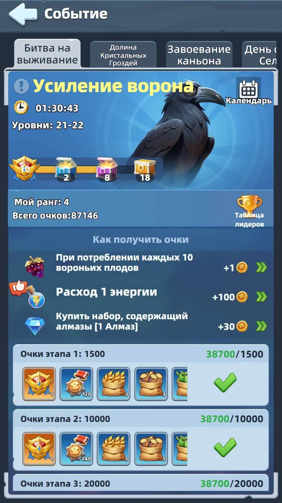
Вкладка «Битва на выживание»
Первая вкладка. Сверху — тема текущего раунда (на картинке «Усиление ворона»), сколько до его конца и «Уровни: 21-22» — с игроками какого уровня Святилища ты в группе.
Полоска с сундуками (рамка слева): число на медали — сколько наград этапов ты уже взял за день; сундуки открываются за 2, 8 и 18 наград. «Мой ранг» и «Всего очков» — твоё место в группе за день, полный список — «Таблица лидеров» (рамка справа). Справа вверху — «Календарь» раундов.
Ниже «Как получить очки» — что засчитывается в этом раунде (палец вверх — самый выгодный способ), и этапы: набрал очки этапа — забираешь его награды, взятые отмечены галочкой.
Темы раундов и очки
| Тема раунда | За что дают очки |
|---|---|
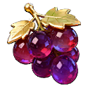 Усиление ворона | 10 вороньих плодов — 1 очко; 1 энергия — 100 очков; набор с алмазами — 30 очков за каждый алмаз |
 Усиление героев Усиление героев | Найм героя — 400; каждые 1 950 противоядия — 1 |
 Развитие владений Развитие владений | 1 минута ускорения стройки — 10; +1 мощь здания — 1 |
 Обучение войск Обучение войск | 1 минута ускорения обучения — 10; 1 солдат — 22 |
 Исследование технологий Исследование технологий | 1 минута ускорения исследований — 10; +1 мощь технологий — 1 |
Совмещай с Дуэлью альянсов. Тратишь вещи дня Дуэли в раунд Битвы с той же темой — очки идут в оба события. Например, в понедельник корми Ворона именно в раунд «Усиление Ворона».

Не выполняй все задания Битвы каждый день без разбора — на Дуэль ничего не останется. В каждом раунде 4 награды, а за 2, 8 и 18 наград за день открываются дополнительные сундуки.
Ответы на вопросы Викторины
Ответы, которые засчитывает игра (собрали игроки). Нажми Ctrl+F и введи начало вопроса, чтобы быстро найти.
Ответы про фракции совпадают с подсказкой самой игры (окно Арены): «Воины получают на 20% меньше урона от рейнджеров», «Рейнджеры — от колдунов», «Колдуны — от воинов». Значит, Воин сильнее Рейнджера, Рейнджер сильнее Колдуна, Колдун сильнее Воина.
Вопросы — по алфавиту.
| Вопрос | Ответ |
|---|---|
| Артура (танк) следует размещать в тылу строя | Неверно |
| В какие дни событие Дуэль альянсов не проводится? | Воскресенье |
| Где производится игровое Противоядие? | Мастерская противоядий |
| Для чего используются предметы из Ткацкой мастерской? | Создание снаряжения |
| Для чего нужно противоядие? | Улучшение и усиление героя |
| Для чего нужны Реликвии? | Оба варианта |
| За что отвечает слот Каравана? | Численность отряда |
| Занимает ли Тайная операция ячейку похода? | Нет |
| Изучение технологии Дуэли альянсов повышает очки, получаемые в Дуэли альянсов | Верно |
| К какой фракции принадлежит Марлена? | Воин |
| Как воинам передаётся скверна? | Укус блохи |
| Как можно получить медные монеты? | Сбор в святилище |
| Как повысить мощность отряда после неудачной экспедиции? | Оба варианта |
| Как подбирать героев для максимального урона при формировании строя? | 5 участников из одной фракции |
| Как улучшить награды, получаемые в Лагере исследователя? | Проходить больше этапов |
| Какая еженедельная тема Дуэли альянсов по понедельникам? | Усиление ворона |
| Какая еженедельная тема Дуэли альянсов по средам? | Изучение технологии |
| Какая еженедельная тема Дуэли альянсов по четвергам? | Усиление героев |
| Какие бонусы могут дать союзники по альянсу? | Оба варианта |
| Какие награды Заданий может улучшить выжившая Фрея? | Задание сокола |
| Какие способы не повышают мощь отряда после поражения? | Нанять выживших |
| Какие усиления не открываются с повышением VIP-уровня? | Улучшение характеристик солдат |
| Какова вероятность получения SSR-награды в найме героев? | 0.17 |
| Какова роль Ворона в игре? | Все перечисленное |
| Какова цель пожертвования Мышиной приманки в событии «Сырная ловушка»? | Повышает урон игрока |
| Каково основное применение посоха чумного доктора? | Удерживать дистанцию от пациентов |
| Вопрос | Ответ |
|---|---|
| Каковы преимущества высокого уровня казармы? | Увеличить лимит солдат |
| Какое снаряжение производит Камень снаряжения? | Плавильный цех |
| Какой из перечисленных героев относится к качеству UR? | Селия |
| Какой интервал между двумя ежедневными получениями энергии? | 4 часа |
| Какой класс у Шэдоу в игре? | Танк |
| Какой особый наряд носили в Средние века для предотвращения Скверны? | Одеяние Чумного доктора |
| Какой цвет редкости снаряжения даёт наибольший прирост к мощи героя? | UR |
| Количество солдат не ограничено | Неверно |
| Кто виноват в тяжёлом ранении и заражении Селии? | Крысиный король |
| Кто стоит за атаками чёрных крыс на город? | Чёрный маг |
| Кто управляет чёрными крысами и нападает на город? | Чёрный маг |
| На каком VIP-уровне открывается автоотправка для Секретных операций? | 6 |
| На каком VIP-уровне открывается быстрое испытание в Битве экспедиции? | 8 |
| На каком VIP-уровне открывается суперрежим Секретных операций? | 12 |
| Против героев какой фракции сильны воины? | Рейнджер |
| Против героев какой фракции Чернокнижники наиболее эффективны? | Воин |
| Сколько минут длится Гонка за эликсиром? | 30 минут |
| Сколько секретных операций может одновременно выполнить каждая экспедиционная очередь? | 4 |
| Сколько часов длится каждая Битва на выживание в игре? | 4 часа |
| Что даёт казарма более высокого уровня? | Увеличивает вместимость казарм |
| Что делать при нехватке ресурсов для улучшения построек/технологий? | Все перечисленное |
| Что из перечисленного можно получить путём повышения? | Усиление клиники |
| Что ограничивает максимальный уровень героя? | Уровень святилища |
| Что ограничивает уровень навыков героя? | Звёздный рейтинг героя |
| Что произойдёт с заражёнными без своевременного лечения? | Скверна |
| Что является доказательством статуса мэра в игре? | Перстень-перчатка |
Долина Кристальных Гроздей
По воскресеньям слева внизу на главном экране появляется кнопка в виде кристалла. Нажми её в нужное время — переместишься на отдельную карту события. Там 30 минут. Задача — набрать как можно больше очищенных кристаллов  : по их количеству считают рейтинг и награды.
: по их количеству считают рейтинг и награды.
Как попасть
Регистрации нет — вход свободный. В воскресенье в часы матчей нажми кнопку-кристалл слева внизу главного экрана — и попадёшь в долину. Матчей четыре: 02:00, 09:00, 18:00 и 23:00 по серверу (07:00, 14:00, 23:00 и 04:00 МСК), каждый идёт 30 минут.
Очищенный кристалл — очки, за них рейтинг.  Кристалл навыка — падает с чумных крыс, на него учат навыки долины. Навыки действуют только в долине и сбрасываются к следующему разу.
Кристалл навыка — падает с чумных крыс, на него учат навыки долины. Навыки действуют только в долине и сбрасываются к следующему разу.Что ты видишь внутри долины
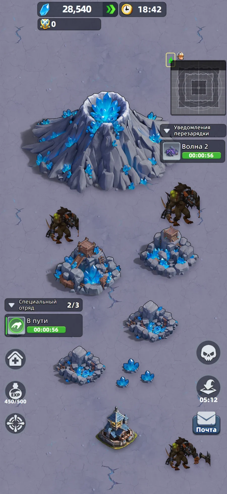
Экран долины собран из картинок самой игры (объекты и кнопки — 1:1, расстановка на карте — для наглядности).
Что делать — по шагам (картинки — из игрового «Руководства» долины)
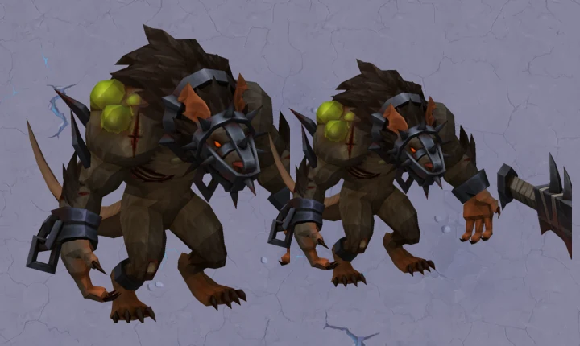
Бей чумных крыс
В долине живут два вида чумных крыс (на картинке — их модели из игры: без оружия и с тесаком). Они бродят по карте — нажми на крысу и атакуй. За каждую дают кристаллы навыков , а на них учат навыки долины (ниже). Чем раньше выучишь навыки — тем быстрее пойдёт весь сбор.
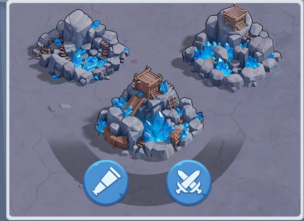
Займи кристальное скопление
Нажми на скопление — появятся две кнопки (рамки): разведка (подзорная труба) и атака (мечи). Свободное скопление охраняют защитники — разбей их, и отряд начнёт собирать. Скопления 1–3 уровня: чем выше, тем быстрее очищаются кристаллы.
Скопление, которое собирает другой игрок (даже соратник), можно отбить — его кристаллы рассыплются осколками вокруг.

Мгновенные скопления
Особые скопления, с которых кристаллы добываются очень быстро. Появляются шестью волнами — на 10-й, 11-й, 12-й, 20-й, 21-й и 22-й минуте (время видно справа в «Уведомлениях перезарядки»). Держи свободный отряд, чтобы успеть.

Священная пещера в центре
Первые 23 минуты она под защитой. Потом её могут захватывать все, но каждый игрок шлёт туда только одну команду. 10 лучших по рейтингу захвата получают большую пачку очищенных кристаллов прямо в итог.
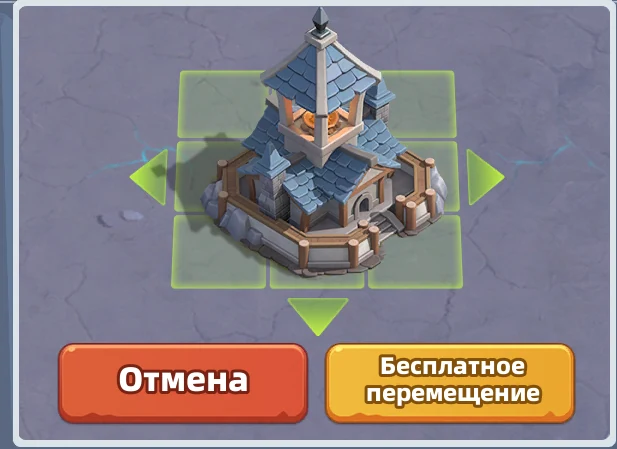
Бесплатное перемещение
Город в долине переставляется бесплатно раз в 360 секунд: выбери место и жми «Бесплатное перемещение» (рамка). Во время перезарядки переезд стоит предмет «Целевое перемещение», каждый следующий — на 1 больше, но не больше 5.
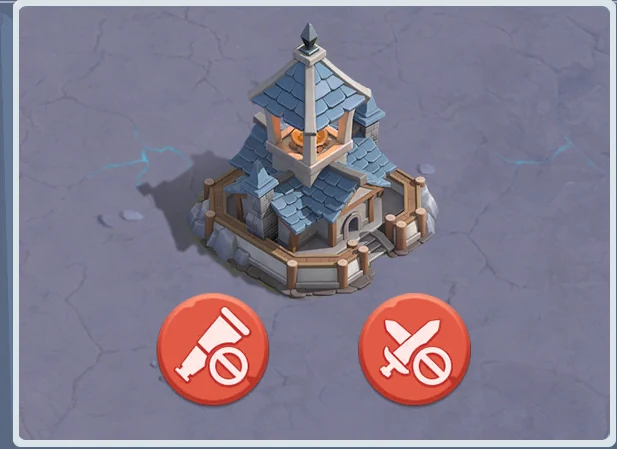
Города игроков атаковать нельзя
В долине кнопки разведки и атаки у чужого города перечёркнуты (рамки): главные города не трогают. Бьются только за скопления и пещеру. Свои солдаты не тратятся — игра выдаёт отряд по вместимости твоей казармы, самого высокого доступного ранга.
Не лезь много раз туда, где проигрываешь. Каждая неудачная попытка отбить скопление даёт герою «провал». Провалы копятся, и после нескольких подряд герой получает ослабление (видно по кнопке-черепу). Провалы проходят со временем: таймер кончился — минус один.
Навыки долины — что выбрать
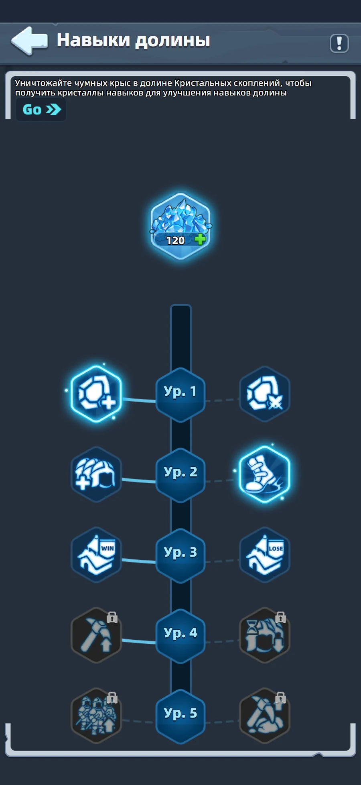
Сверху — кристаллы навыков (рамка), ниже 5 уровней; светится выбранный навык.
На каждом уровне — два навыка, выбрать можно только один. Уровни 1–4 — пассивные (работают сами после изучения), 5-й уровень — активный, его надо нажимать вручную. Учатся за кристаллы навыков.
| Уровень | Навык 1 | Навык 2 |
|---|---|---|
| 1 | Всплеск кристалла — периодически даёт 1 080 очищенных кристаллов | Охотник на чумных крыс — +1 500 кристаллов за каждую убитую чумную крысу |
| 2 | Увеличение силы — вместимость похода героя +50 | Быстрый марш — скорость похода в долине +25% |
| 3 |  Разграбление в долине — +5 000 очищенных кристаллов при захвате жилы (раз в 60 сек.) Разграбление в долине — +5 000 очищенных кристаллов при захвате жилы (раз в 60 сек.) |  Дозор в долине — +5 000 очищенных кристаллов при неудачной попытке захвата (раз в 60 сек.) Дозор в долине — +5 000 очищенных кристаллов при неудачной попытке захвата (раз в 60 сек.) |
| 4 | Добыча кристаллов — сбор со скоплений быстрее на 15% |  Стальная воля — ослабления короче на 30 сек. Стальная воля — ослабления короче на 30 сек. |
| 5 | 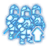 Пробуждение долины (нажать) — урон героя +15% на 60 сек., перезарядка 300 сек. | Резонанс кристалла (нажать) — сбор со скоплений +50% на 60 сек., перезарядка 300 сек. |
Названия и цифры — из самой игры. Если ты в основном собираешь — бери навыки на сбор (Всплеск, Быстрый марш, Добыча, Резонанс). Если отбиваешь скопления у других — Разграбление и Пробуждение долины.
Завоевание каньона
Альянсы бьются на трёх линиях каньона. От тебя нужно только записаться и выбрать линию — бои идут сами, без тебя. Войска здесь не гибнут и очередь маршей не занимают, поэтому записываться безопасно.
Как записаться — по шагам
Значок «Особое событие»
Справа на главном экране, второй сверху в столбике круглых значков. Откроется окно «Событие» с вкладками.
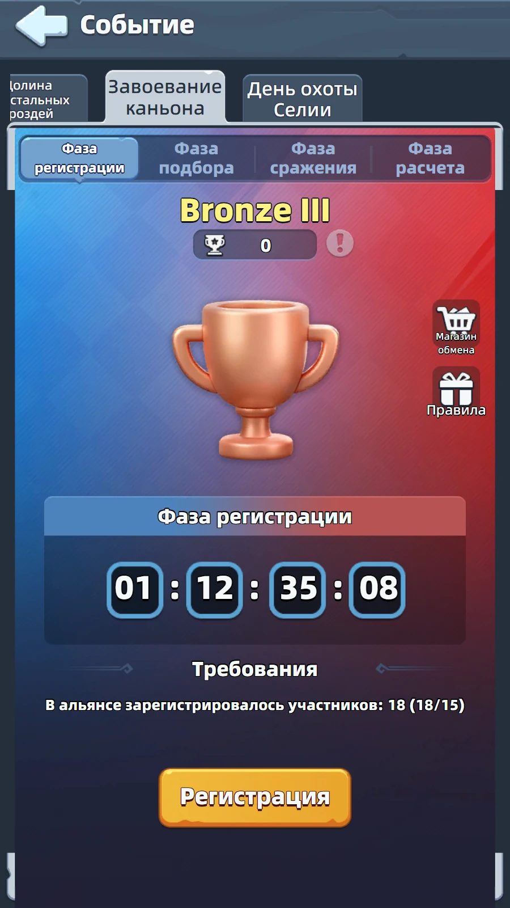
Вкладка «Завоевание каньона» → «Регистрация»
Сверху четыре фазы: регистрации, подбора, сражения, расчёта. Ниже — медаль альянса (Bronze III и выше), таймер до конца текущей фазы и «Требования»: сколько человек из альянса уже записалось. Пока идёт фаза регистрации — жми жёлтую «Регистрация».
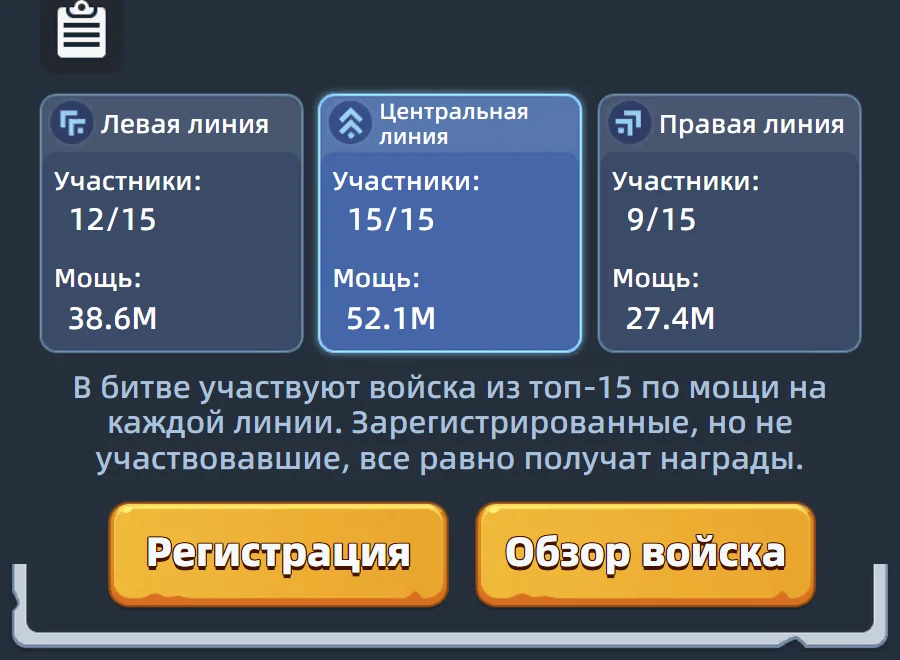
Выбери линию и собери команду
Внизу три карточки: Левая, Центральная и Правая линия — сколько участников и какая мощь уже стоит на каждой. Нажми на линию (она подсветится) и затем «Регистрация» — выберешь героев в команду. Если не знаешь куда — ставь на центральную: лидеры потом переставят. «Обзор войска» — посмотреть, кто где стоит.
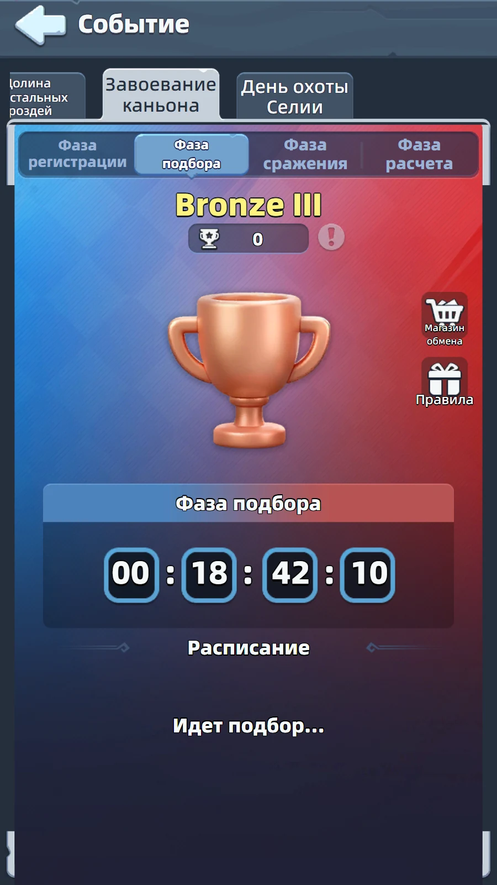
Фазы подбора, сражения и расчёта
После записи вкладка переключается на «Фаза подбора» (рамка): таймер — сколько до конца подбора, ниже «Расписание» — пока идёт подбор, там «Идет подбор…», потом появятся раунды, альянс-соперник и время каждого боя.
В «Фазе сражения» бои на трёх линиях идут сами: перед боем лидеры могут менять команды местами между линиями, после — смотреть «Историю матчей». В «Фазе расчёта» всем записавшимся приходят награды, медаль альянса растёт или падает (Bronze → Silver…).
Экспедиции: Битва экспедиции, Экспедиция альянса, Приключение
В игре три разных режима со словом «экспедиция». Правила ниже — из окон правил в самой игре.
Битва экспедиции
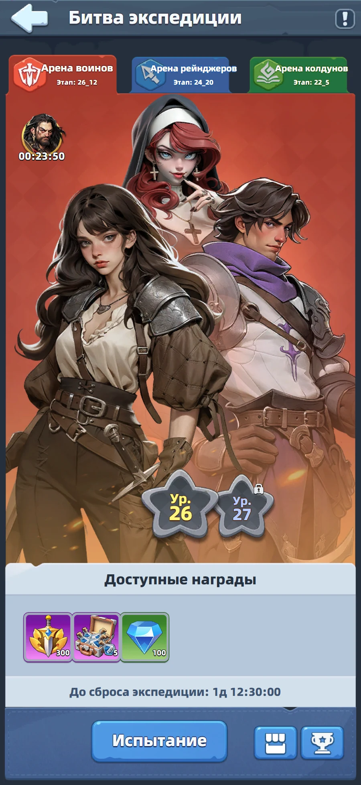
Окно «Битва экспедиции». Рамки: три поля боя по фракциям и кнопка «Испытание».
Вкладки сверху: Арена воинов, Арена рейнджеров, Арена колдунов. На каждое поле пускают героев только своей фракции. «Этап: 26_12» под названием — уровень сложности и этап, до которого ты дошёл.
Звёзды с «Ур.» посередине — уровни сложности, в каждом 20 этапов. До сброса для каждого поля выбирается один уровень, поменять его потом нельзя. Игра предупредит, если твоя мощь низкая — тогда бери уровень пониже.
Прошёл все этапы уровня впервые — сразу открывается следующий. Быстрое испытание (бой в один клик) открывается на VIP 8 или после нужного этапа.
(05:00 МСК). Каждое испытание после сброса длится 48 часов — внизу окна «До сброса экспедиции». Награда — Медали экспедиции: их меняют на предметы в Магазине экспедиции (кнопка с прилавком справа внизу), в том числе на сундук снаряжения ворона.
Героям ниже 100 уровня во время события можно сразу поднять уровень на 1 особым улучшением (но не выше потолка Святилища). Солдаты здесь не гибнут.
Экспедиция альянса
Событие альянса против Лагеря скверны: «Бушующий вирус поразил некогда доблестный легион… Воины альянса призваны истребить этот падший легион».
- Запускают R4 или R5, если в альянсе больше 10 участников со Святилищем 6+.
- Кнопка «Поиск Лагеря скверны» ведёт к цели. Бьёшь босса лагеря — копится урон альянса, за пороги урона — сундуки для всех.
- 3 попытки в день, сбрасываются в 00:00 по серверу.
- Чем сильнее разовый удар лидера рейтинга, тем больше бонус к урону у всего альянса. У события есть подсказанные герои — с ними характеристики в бою с этим монстром заметно выше.
Приключение
Правила из самой игры: доступна только зона 1, следующая открывается после зачистки текущей — сложнее, но награды ценнее. В каждой зоне припасы, награды и монстры: одолей босса и забери награду, чтобы зачистить зону. У каждой зоны свои цели исследования; в пройденные зоны можно вернуться, но награды берутся один раз.
Все 500 этапов
На каждом — рекомендуемая мощь, отряд врага и награда за первое прохождение. ◆ — у этапа есть сундук (наведи, чтобы увидеть, что в нём). Цифры — из таблиц игры.
Загружаю этапы…
Доход в простое
Пока тебя нет в игре, Приключение каждые 5 минут выдаёт награду. Уровень дохода растёт по мере прохождения этапов.
Остальные события
Опыт пандемии (сиделки)
Раз в 2 недели, сразу после «Дня охоты Селии». Длится 3 дня. В начале выбираешь сложность. Задача — убить 30 сиделок, с 1 по 30 уровень (кнопка сиделок слева внизу во время события).
Чем больше игроков альянса убьют всех своих сиделок, тем больше уровней Доктора-крысы откроется для альянса — его бьют штурмами в назначенное R4/R5 время.
Если прошлый уровень дался с трудом — не повышай сложность, можно вообще не пройти.
Улучшение снаряжения
По субботам и воскресеньям (одна награда на два дня). Задача — улучшать снаряжение героев. Лёгкое и обязательное: копи камни снаряжения на выходные.
Торговец-отшельник
Магазин за монеты события. Монеты дают в соседней вкладке «Загадка отшельника»: карта из 15 заданий на 7 дней (ряд или столбец целиком — открывает сундук, все 15 — супер-сундук). Потом там же «Путь отшельника» — монеты за задания сокола, секретные операции и монстров.
- Первый товар всегда бесплатный, второй и третий — со скидкой.
- Магазин можно обновить ещё 8 раз в день: 2 бесплатно, потом +10 кристаллов за каждые 2 (всего 120). После каждого обновления — снова бесплатный товар.
- Самое ценное — сундуки для пробуждения героев и их оружия.

События первой недели нового игрока
Лечебное событие (7 дней): левая ветка наград — бесплатная, правая — платная. Битва на выживание открывается с 3-го дня. Финальный рассвет — нужно 4,6 млн мощи за неделю, бесплатным игрокам — забирать то, что получается.
Праздничные события
На праздники игра включает целый набор событий сразу — они появляются отдельной кнопкой праздника на главном экране, справа в столбике значков. Устроены все праздники одинаково, меняются только названия и предметы. Ниже — что в каждом наборе, словами самой игры.
Как устроен любой праздник — 5 частей
Пряники, маски, рыба, кексы — их «собирайте в Соколиной башне, с ресурсных монстров, элитной скверны, тайных отрядов и блуждающей скверны». Есть дневной лимит; неиспользованный лимит переносится на следующий день.
Собранное сдаёшь в общее событие (пир, дегустация, примерка наряда, карнавал). Шкала общая для всего сервера: набрали опыт все вместе — уровень растёт, и награды уровня забирают все.
Тратишь монеты события на розыгрыш, за каждый розыгрыш — очки и награды фаз. Режим 5x тратит в 5 раз больше монет и даёт в 5 раз больше. Неиспользованные монеты после конца превращаются в ускорения: 1 монета = 30 универсальных ускорений по 1 минуте.
Обмен валюты события (шляпы, знаки, пиратское золото) на предметы. Валюту дают розыгрыш и наборы.
Ежедневные задания дают очки и награды; забытые награды за день приходят на почту на следующий день. Эпические и мифические награды пропуска — платные.
Нажимаешь карты — они попадают в 7 ячеек, три одинаковые исчезают. Помогают «Удалить», «Вернуть», «Обновить». Заполнились все 7 ячеек — этап провален.
Хэллоуин
«Бал-маскарад» — поле из 26 клеток, кубики за Хэллоуинские монеты; клетки предметов растут в уровне, на поле появляются «Благословенные сундуки бала».
Ещё: «Сладость или гадость» (задания за конфеты), «Создание масок» → «Примерка наряда» (общая шкала), «Хэллоуинский базар» (обмен Волшебных шляп), «Сокровища фантома» (три карты), «Хэллоуинское печенье».

Праздник луны (Ночь полнолуния)
«Звездная клятва» — розыгрыш за Лунные монеты. «Выпечка лунных пряников» → «Дегустация лунных пряников» (общая шкала), «Звездный базар» (обмен звездно-лунных знаков), «Эликсир Нефритового кролика» (задания), «Тайна лунной тени» (три карты), «Пожелание Нефритового кролика».
В 2026 году праздник луны начался 21 сентября.

Пиратский праздник
«Пиратская игра» — розыгрыш за Якорные монеты. «Лакомая охота» (морская рыба) → «Великий пир» (общая шкала), «Пиратский рынок» (обмен Пиратского золота), «Пиратское мифическое сокровище» (задания за кортики), «Зарытый клад» (три карты), «Дар морских глубин».

Пасха
«Охота за пасхальными яйцами» — 7 дней, каждый день новый набор с золотым молотом; молотом разбиваешь яйцо, всего 7 призов, повторов нет. Неиспользованные удары сгорают.
Ещё: «Празднование Пасхи» (задания и уровни) и «Рынок искусств» (обмен карт цветов).

Праздник банкета
«Утерянная карта» — задания за Игральные карты. «Ларец чудесных игрушек» (7 дней, Игрушечные ключи открывают ларцы, внутри Чашки) → «Чайный рынок» (обмен Чашек). «Подготовка банкета» (Кексы) → «Романтический банкет» (общая шкала).
Рождество и Новый год
Рождество: «Рождественский карнавал» (сдаёшь Рождественские огни — общая шкала сервера), «Защита подарков» (бьёшь Рождественского вора и Рождественских Эльфов предметами события), «Рождественский пропуск», «Рождественский магазин».
Новый год: «Новогодний салют» (запускаешь фейерверки, на 100% энергии — фейерверк-шоу со случайной наградой), «Новогодний праздник» (задания за очки), «Новогодний пропуск», «Новогодний магазин».
Хэллоуин: «Бал-маскарад» — как это выглядит (картинки из «Инструкций» в игре)
«Это зал из 26 клеток, который охраняет Тыквенный призрак. Каждый шаг здесь даёт сюрприз. Доверьтесь кубикам.» Бросок — за Хэллоуинские монеты: обычный (1 кубик) или двойной (2 кубика; награды не удваиваются, прогресс одинаковый).


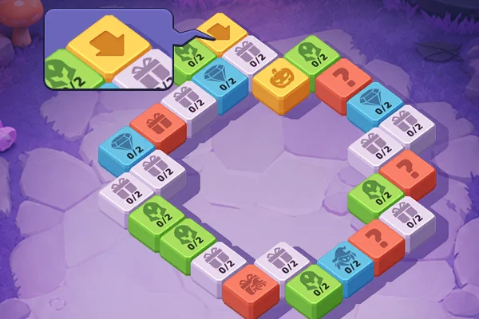
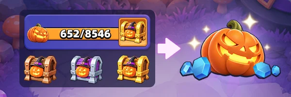

Главное правило праздников: праздничные монеты не пропадают даром — после конца они сами превращаются в ускорения. А вот праздничные предметы для сдачи и удары молотом сгорают: сдавай их до конца события.
Ещё события, которые встречаются в игре
Эти события есть в самой игре, но в гайдах про них почти не пишут. Всё ниже сверено с текстом внутри игры, а не с чужими сайтами.
Осквернённая графиня
Это не отдельное событие: графиня появляется на карте во время события «День охоты Селии» (оно ниже). У неё 12 уровней, с 1-го по 12-й.
Как найти: нажми лупу («Поиск») слева внизу и выбери в списке целей «Осквернённая графиня» — игра отвезёт к ближайшей.
Как бить: только штурмом. В одиночку на неё не ходят: это полноценный альянсовый монстр, а не обычная скверна.
Уровень бери по силам альянса: каждый следующий заметно крепче.
Колесо желаний
Рулетка. Крутишь её за «Монеты желаний» — это отдельный предмет, он так и называется и нужен только здесь.
Есть дневной лимит попыток: игра покажет «Суточные попытки: 3» и не даст крутить больше. Исчерпал — напишет «Дневной лимит розыгрышей исчерпан».
Выигрыш крупного приза объявляется в чате всему серверу.
Рядом бывает «Благословенное колесо» — то же самое, но за «Монеты благословения». Это разные колёса и разные монеты, не путай.
День охоты Селии
Событие про истребление скверны. Игра пишет: «Объедините силы с Селией, чтобы искоренить зло. Выполняйте задания штурма, чтобы получить редкие награды».
Что делать: бить скверну с 1 по 20 уровень штурмами. За выполнение целей открывается «Сундук Селии» и бонусная награда сверху.
Смотреть прогресс и забирать награды — в окне события, кнопки «Вперёд» (прыгнуть к цели) и «Получить».
Когда бывает: событие длится 2 дня, за день альянс может запустить до 20 штурмов на Осквернённую графиню. Бывает раз в 2 недели: сначала День охоты Селии, сразу за ним начинается «Опыт пандемии». После начала Эры Возрождения его место занимает событие «Внутренний демон Клэр».
Это не «Охотничий бой»: тот запускают R4/R5 на территории альянса, а этот идёт сам по себе.
Шахта гномов
Копаешь вниз по этажам. Одна раскопка = одна гномья кирка; кирки дают за задания, задания обновляются каждый день в 00:00 по серверу (05:00 МСК).
Главное правило: перед раскопками выбери награду для текущего этажа — иначе копаешь вслепую.
Чем больше копаешь на одном этаже, тем выше шанс особой награды: после 3 раскопок он растёт в 5 раз, после 6 — в 10, после 9 — в 30. А на некоторых этажах следующая раскопка даёт особую награду гарантированно.
Отдельные награды на этажах 5, 10, 20, 30, 40, 60, 80 и 100. Глубина события — до 200 этажа.
Неожиданная встреча
Приключение за алмазы. Одно приключение в день бесплатное — его стоит делать всегда.
Каждое приключение точно даёт предмет и может дать сундук-сюрприз. Сундуки открываются за «эмблемы сюрприза», при открытии есть 5% шанс удвоить награду.
Ловушка: держать можно не больше 4 неоткрытых сундуков. Набрал 4 — новые перестают выпадать, и бесплатные приключения тратятся впустую. Открывай вовремя.
Два события-магазина — туда ходят только за донат
Странный базар
«Странные монеты» дают за покупку наборов за деньги, потом меняешь их на предметы. Неистраченные монеты не сгорают и останутся до следующего раза.
Бесплатному игроку здесь делать нечего, но и терять ничего не надо: монеты сохранятся.
Клинки наголо
То же самое: «Каменные клинки» дают за покупку наборов, наборы обновляются каждый день в 00:00 по серверу. Покупка даёт столько же VIP-очков, сколько обычные алмазные наборы.